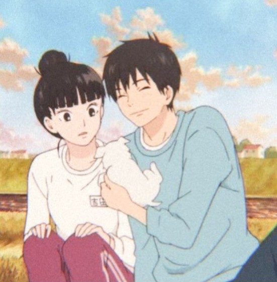
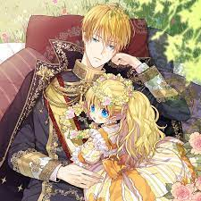
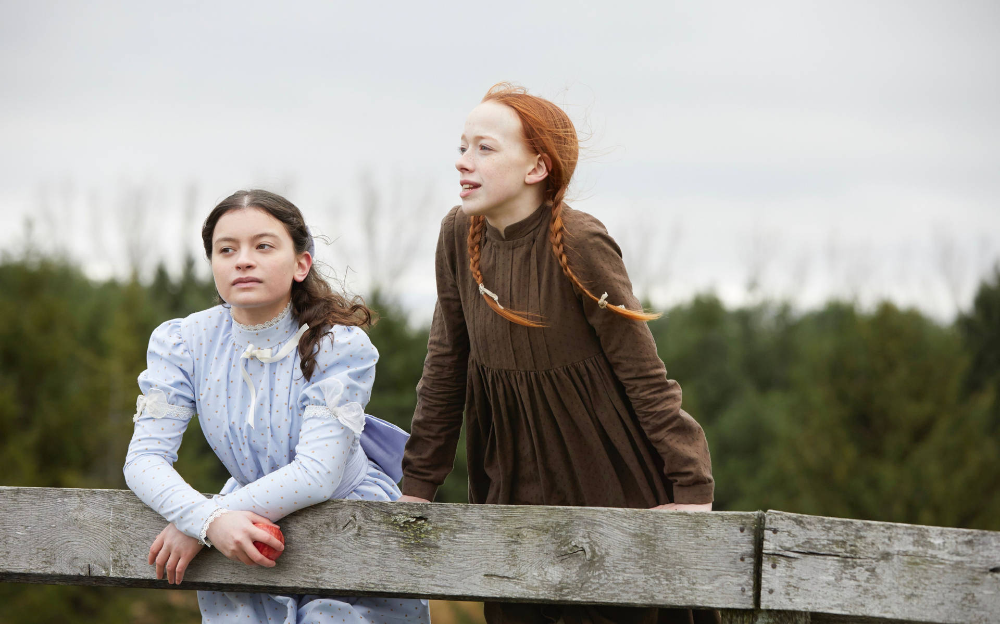
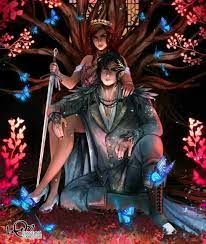

Kimi Ni Todoke
Kimi ni Todoke é um anime e mangá que acompanha Sawako, uma garota tímida e sem amigos, em sua vida escolar. Nesse novo ano letivo, ela trá muitas surpresas agradáveis.
Para Todos os Garotos que já Amei
Para Todos os Garotos que já Amei conta a história de Lara Jean quando sua irmãzinha envia 5 cartas de amor antigas para 5 rapazes.
Who Made Me a Princess
Como se fosse uma novel, uma garota comum reencarna no corpo de Athanasia Obelia, uma gentil princesa que está fadada a morrer pelas mãos de seu pai ao completar 18 anos.
Anne de Green Gables
A Saga de livros de Anne nos mostra a vida de uma pequea garotiha orfã que é adotada por um casal de irmãos. Em Gren Gables, Anne pode viver tudo o que sempre quis, uma família.
Principe Cruel
Jude e suas irmãs são levadas para um reino mágico após verem o assinato de sua mãe e pai. Em um terreno encantadoramente hostil, ela aprende a viver de acordo com as fadas.
Faça seu cadastro e veja mais funcionalidades do nosso site! Ler é uma preciosidade não acha?
alice.barbosa@sptech.school
café&Livros
café&Livros